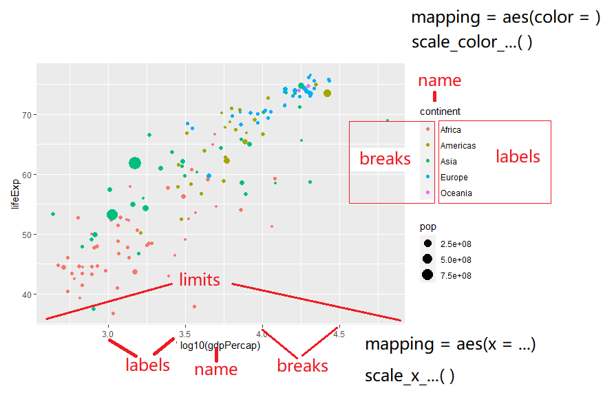
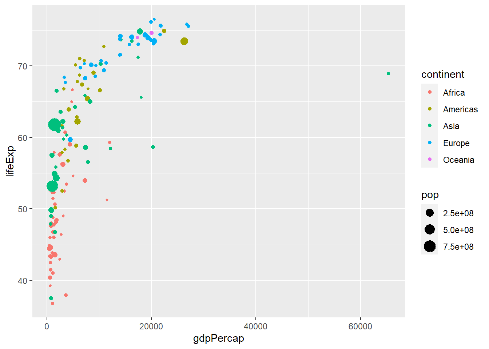
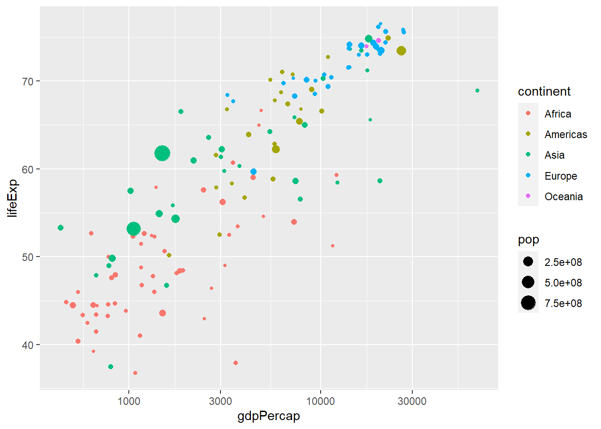
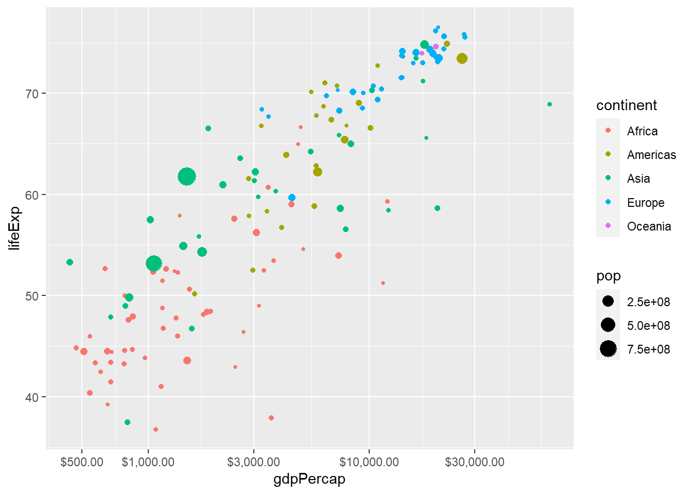
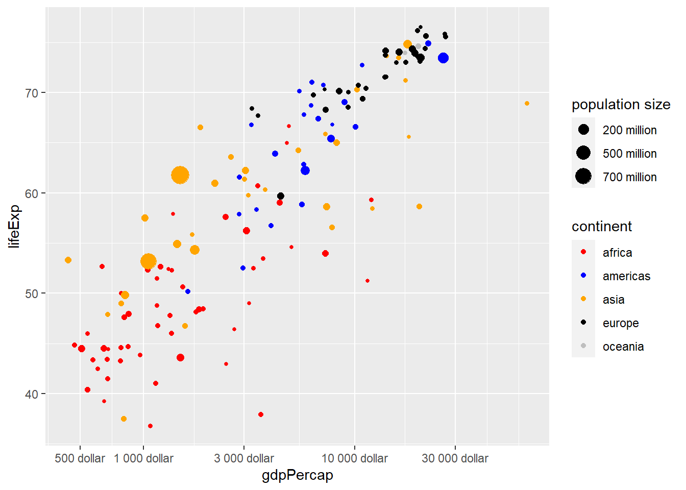

library(tidyverse)
ggplot(mpg, aes(x = displ, y = hwy)) +
geom_point(aes(color = class))
data
aes：着重说下这部分
aes()美学映射，就是将数据集中的变量数据映射（关联）到相应的图形属性上。
常用的图形属性有color、size、shape、alpha等。
有很多关于r语言绘图的图库网站，The R Graph Gallery。网站给出了常用图形的R代码，可以查阅并了解每种图形使用场景和优缺点。
以下4~10，我们挑不太熟悉的细说。
如果想要详细了解标度，还是需要阅读ggplot2官方文档。此外，ggplot2tor提供了详细的标度信息说明供查阅参考。
标度是什么？标度就是用来调整数据映射的图形属性。
先来看一个例子
library(tidyverse)
ggplot(mpg, aes(x = displ, y = hwy)) +
geom_point(aes(color = class))
上图已经很美观，但其实是因为ggplot2设置了一些默认的标度缺省条件，上图代码的完整版应该如下：
ggplot(mpg, aes(x = displ, y = hwy)) +
geom_point(aes(color = class)) +
# 以下为默认标度
scale_x_continuous() +
scale_y_continuous() +
scale_color_discrete()
knitr::include_graphics("images/ggplot2-scales.png")
knitr::include_graphics("images/ggplot2_scales_cheat.jpg")
标度函数均由_分割的三部分构成：scale_视觉属性名-标度名，每个标度函数内都有丰富的参数系统。
scale_color_manual(
palette = funcion(),
limits = NULL,
name = waiver(),
labels = waiver(),
breaks = waiver(),
minor_breaks = waiver(),
values = waiver(),
...
)参数name：设定坐标/图例的名字，不要名字可以name = NULL
参数limits：设定坐标/图例的范围区间，
c(m, n)c("a", "b", "b")参数labels： 控制显示在坐标/图例上的值（元素）
参数breaks：设置坐标和图例的间隔标签：
breaks提供的字符向量一一对应breaks提供的字符型向量当作函数的输入参数values：设置颜色、形状等的视觉属性值
breaks提供的字符型向量长度一致参数expand, 控制参数溢出量
参数range, 设置尺寸大小范围，比如针对点的相对大小
gapdata <- read_csv("datas/demo_data/gapminder.csv")newgapdata <- gapdata %>%
group_by(continent, country) %>%
summarise(
across(c(lifeExp, gdpPercap, pop), mean)
)
newgapdata# A tibble: 142 × 5
# Groups: continent [5]
continent country lifeExp gdpPercap pop
<chr> <chr> <dbl> <dbl> <dbl>
1 Africa Algeria 59.0 4426. 19875406.
2 Africa Angola 37.9 3607. 7309390.
3 Africa Benin 48.8 1155. 4017497.
4 Africa Botswana 54.6 5032. 971186.
5 Africa Burkina Faso 44.7 844. 7548677.
6 Africa Burundi 44.8 472. 4651608.
7 Africa Cameroon 48.1 1775. 9816648.
8 Africa Central African Republic 43.9 959. 2560963
9 Africa Chad 46.8 1165. 5329256.
10 Africa Comoros 52.4 1314. 361684.
# … with 132 more rowsggplot(newgapdata, aes(x = gdpPercap, y = lifeExp)) +
geom_point(aes(color = continent, size = pop)) +
scale_x_continuous() # 默认x轴
ggplot(newgapdata, aes(x = gdpPercap, y = lifeExp)) +
geom_point(aes(color = continent, size = pop)) +
scale_x_log10()
ggplot(newgapdata, aes(x = gdpPercap, y = lifeExp)) +
geom_point(aes(color = continent, size = pop)) +
scale_x_log10(breaks = c(500, 1000, 3000, 10000, 30000),
labels = scales::dollar)
ggplot(newgapdata, aes(x = gdpPercap, y = lifeExp)) +
geom_point(aes(color = continent, size = pop)) +
scale_x_log10(
breaks = c(500, 1000, 3000, 10000, 30000),
labels = scales::unit_format(unit = "dollar")
) +
# 手动调整颜色
scale_color_manual(
name = "continent",
values = c("Africa" = "red", "Americas" = "blue",
"Asia" = "orange", "Europe" = "black",
"Oceania" = "gray"),
labels = c("africa", "americas", "asia", "europe",
"oceania")) +
# 设定标度大小-这里主要设定图例pop的
scale_size(
name = "population size",
breaks = c(2e8, 5e8, 7e8),
labels = c("200 million", "500 million", "700 million")
)
那什么时候用标度，什么时候用主题？这里有个原则：主题风格不会增加标签，也不会改变变量的范围，主题只会改变字体、大小、颜色等等。